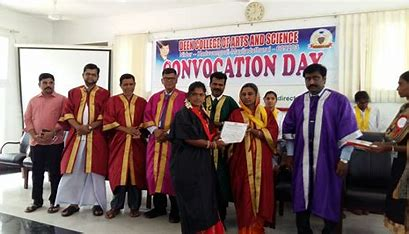
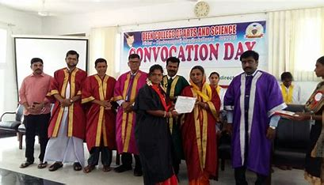

Deen College of Arts and Science is established by Rafiudeen Educatinal and Charitable Trust. Dr. A. Rafiudeen is the Chairman. The Committee members are Mr. R. Kursheed and Mrs. R. Foujiya Begum. We have an experienced, well qualified, dedicated and disciplined team of 40 teaching faculty and 20 non teaching employees, maintaining cordial, conductive and compassionate relation with students.
| HOME | FACULTY | ACADEMIC | GALLERY | VIDEO | ASSOCIATION | STUDENT SUPPORT |
 
